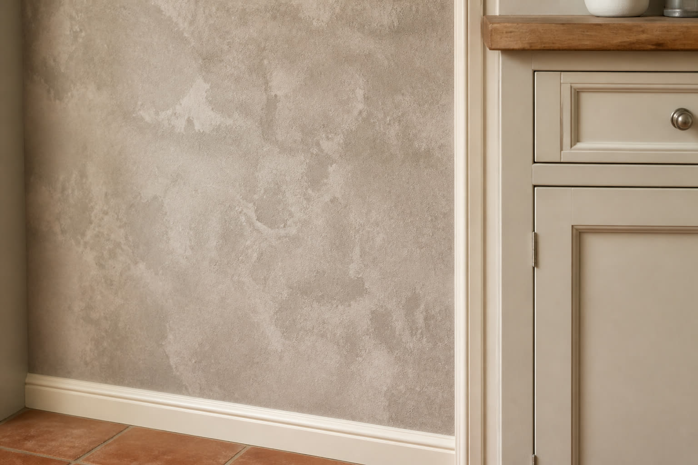
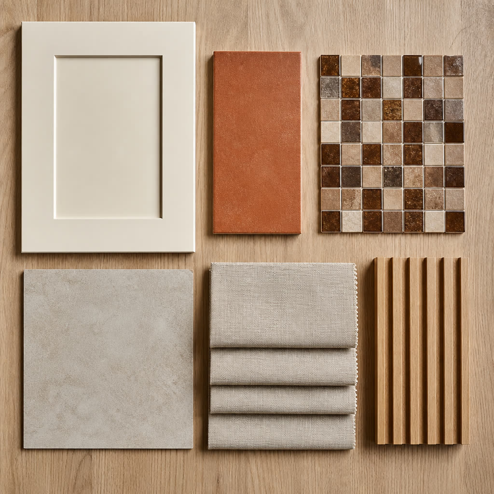

Вердикт
Три зоны — одна система. Стол уезжает из кухни в дальнюю часть гостиной. Прихожая перестаёт быть открытым складом курток. Кухня остаётся рабочей на 2–3 человека, с моющейся стеной чуть темнее фасадов.
Не делать: ещё одни светлые льняные обои, австрийские сваги, стол в правом углу кухни, толстый брус 40 x 40 в прихожей, откидную 140 на всякий случай.


Кухня
Кремовый шейкер, мойка, плита, духовка, холодильник и полуостров (стиральная + СВЧ) остаются. Меняем стены, окно и стол.
Обои
- Винил горячего тиснения на флизелине, 2–3 волны, 1,06 м, без подгона.
- Фактура штукатурка / микроцемент. Цвет — тёплый гриж, на тон темнее фасадов.
- Где: Лемана ПРО (Erismann, Palitra, Ateliero) 1,2–4,5 тыс. руб./рулон; Обойкин / Европа 3,5–8,5 тыс. руб.
- Не брать: светлый лён, бумагу, одну волну, цветы, 3D-кирпич, живой микроцемент ради статуса.



Окно
Сваги и круглый карниз — в мусор. Потолочная алюминиевая шина цвета потолка. Римская песок/лён в проём. Две кремовые панели до пола минус 1,5 см, без ламбрекена. Пошив 12–35 тыс. руб. вместе с карнизом.
Стол
Не в правый угол. Прямоугольник 120 x 70 длинной стороной вдоль окна (предпочтительно) или круг D100, если чистая ширина от 2,6 м. 2–3 стула каждый день, складные — в шкафу. Проход вдоль гарнитура от 0,90 м. Створку стиральной не перекрывать.
Прихожая 2,6 x 1,4 м
Узкий коридор. Рейки — тонкие, иначе не разойтись. Открытую вешалку снимаем.
- Сечение 20 x 40 мм плашмя (20 мм к комнате) или 16 x 30. Вынос с подложкой до 25–30 мм.
- Правая стена: дадо 1400 мм. Торец: рейки в высоту + крючки 1100 / 1650 мм.
- Банкетка 900–1000 x 350–400 с ящиками. Пуховики — в купе, на крючках только недельный комплект.
- Верх стен: тауп моющийся (Tikkurila / Dulux) или винил 3 волны темнее кухни.

Гостиная 7 x 3,5 м
A — стол у окна рекомендую
Дальняя зона ~2,2–2,5 м становится обеденной на 4–6. Стол 140–160 x 80–90, подвес на оси, ковёр только у дивана. Камин, ТВ и пианино не трогаем. Смета зоны 50–120 тыс. руб. Это закрывает и пустую гостиную, и тесную кухню.
B — вертикальная откидная в нише
Только если гости ночуют часто и пианино можно убрать. Открытая кровать ест 2,0–2,2 м при ширине комнаты 3,5 м — диван и проход к окну блокируются. Стена должна быть каменной, не ГКЛ. Нишу мерить до заказа: 90 см шкаф около 1,10 м; 140 см около 1,55–1,65 м.
Цены: готовая 90 ~40–70 тыс., 140 ~70–150 тыс., фасад в цвет 150–280 тыс. + матрас. Fly-bed, цех кухонь. Hoff «подъёмная царга» — не то.

Смета контура A (без кровати)
| Блок | Мин | База | Макс |
|---|---|---|---|
| Кухня: обои и работа | 20 000 | 35 000 | 55 000 |
| Кухня: римская, шина, панели | 12 000 | 22 000 | 35 000 |
| Кухня: стол и стулья | 22 000 | 40 000 | 60 000 |
| Прихожая: рейки | 30 000 | 50 000 | 70 000 |
| Прихожая: верх стен, дорожка | 8 000 | 14 000 | 22 000 |
| Прихожая: банкетка, крючки | 10 000 | 16 000 | 25 000 |
| Гостиная A: стол, стулья, свет | 50 000 | 85 000 | 130 000 |
| Итого | 152 000 | 262 000 | 397 000 |
Цены — розница РФ, август 2026, плюс-минус 20%. Ванные не включены. Список позиций — в DESIGN.md, раздел 6.
Когда будет план Paint
- Кухня: 4,50 x 2,70 — это между стенами или уже без гарнитура 0,60?
- Полуостров, сторона стиральной, петля холодильника, вынос батареи, ось люстры.
- Прихожая: три ширины в свету, глубина купе, проёмы в комнаты, розетки на торце.
- Гостиная: ниша окно-камин (ш x в x г), материал стены, пианино да/нет, диван.
Пока цифры — гипотеза по фото. Не заказывать рейки и кровать до рулетки.